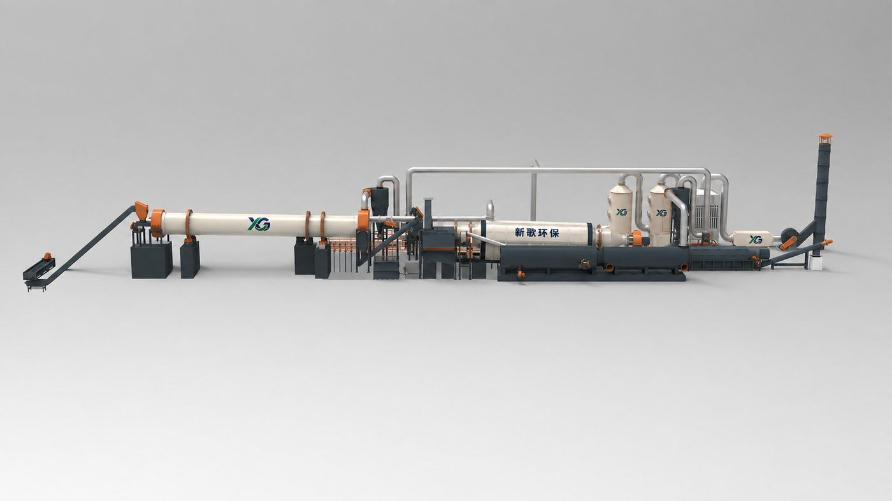

CARBONIZATION
Continuous Biomass Carbonization Plant
A continuous line that buys almost no fuel — dry, carbonize at about 350 °C, cool the char out, clean the flue gas.
Four stages
Feed is crushed to ≤20 mm (2–3 cm preferred) and dried to ≤15% moisture. A hot-air furnace heats the retort shell to 300–350 °C; wood chips start to pyrolyse and smoke at about 350 °C, and that gas burns in a combustion chamber at roughly 900 °C, returning heat to the shell.
Char leaves through two or three cooling screws down to ambient and is bagged without stopping the line. Flue gas is cooled in a shell-and-tube exchanger before the spray tower; drying gas is cyclone-separated first.
Capacities
DY-T-1 / DY-T-2 / DY-T-3 cover 1 / 2 / 3 t per hour with Φ1300 / 1600 / 1800 × 14000 retorts. Footprint about 38 × 10 m including 8 m headroom, one to two operators per shift.
The 20 t/day wood-chip line is built per project: Φ2000×20000 retort in 304 at 16 mm, 12 m heated zone, Φ2400×18000 dryer, a site of about 9,000 m² and 156.5 kW installed.
Output and heat balance
Outputs are solid char, wood vinegar, tar and combustible gas. Once stable the line runs on its own gas and normally buys no fuel, topping up only when short. About one third of the heat runs the line; the other two thirds can dry the feed. Continuous operation runs 7–10 days between stops.
Feedstocks: rice husk, straw, sawdust, wood shavings, bark, coconut shell, corn cob, bamboo, palm kernel shell and wood chips.
Ask for a proposal on this line
Related
